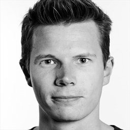
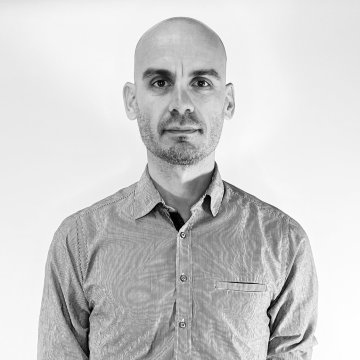

Produkter

Produkt Information
I Tech & Story Lab finder du et udvalg af kabler, der giver dig mulighed for enten at forbinde udstyr, der har samme type stik, eller forskellige stik, fx USB-A, USB-C, USB-Mini, USB-Micro og Apple Lightning-stikket.
- Kategori
- Kategori
- Mærke
- Mærke
- Model
- Produktnavn og model
kontakt

Frederick Lehmann Rosling
T: 46 46 04 42
E: techandstorylab@kea.dk

Luca Fusco
T: 46 46 04 42
E: techandstorylab@kea.dk
Simon Benjamin Christensen
T: 46 46 04 42
E: techandstorylab@kea.dk